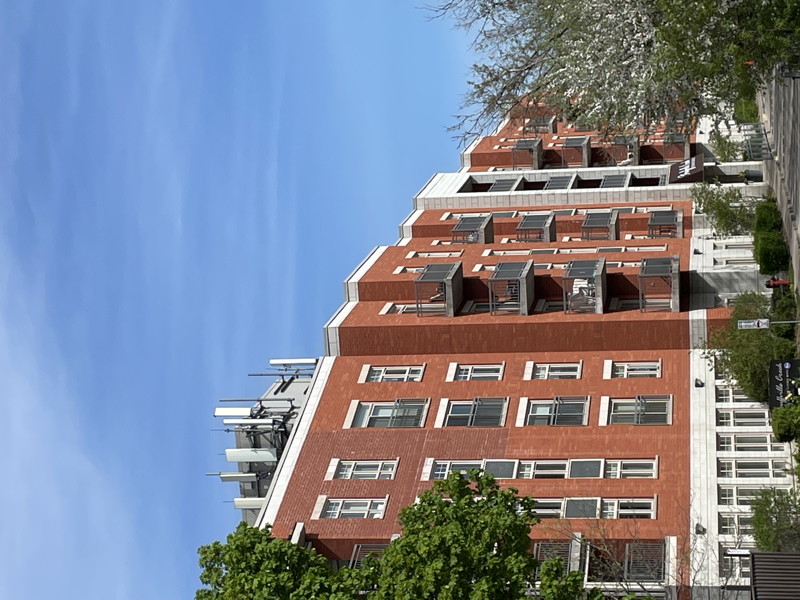
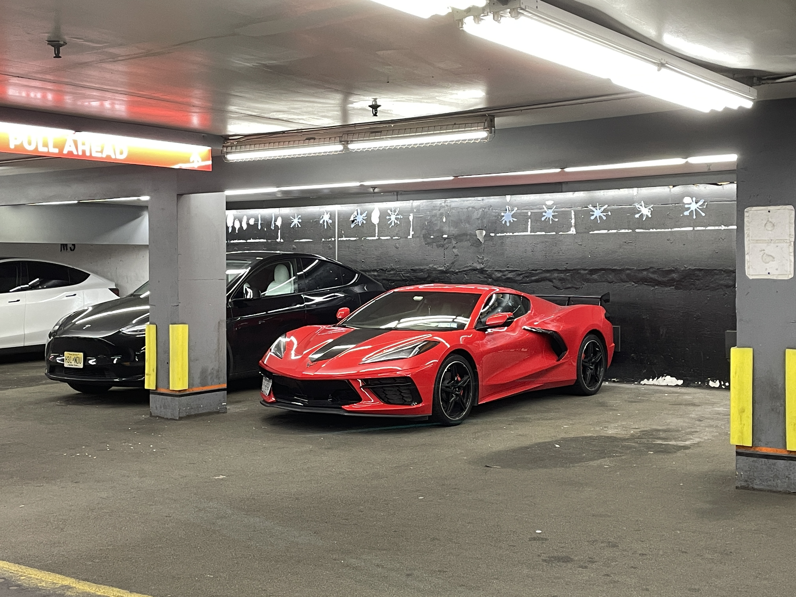

as a certified super official photographer i thought i would share some of my work with you
this is a picture of a building i saw when i was helping my mom with a craft show.

this is a picture of my friend nathan. weird vibes and the guns are airsoft.
this is another photo from the same day as the previous one. nathan and my other friend jayred are in this one.

this is a cool photo of dinner from my sisters birthday dinner.

this is a photo of some tulips i found on a walk. i knew someone who liked tulips so i took a photo of them.

these are some other tulips i found on the same road. they reminded me of the same person.

i went to a park with a lot of flowers. even the stomped and withered ones have a way of catching my eye.

a symbolic representation of my growth

i really like sunflowers.

swans and a day of forgetting. the swans were cool and i did not forget.

books n stuff

soho 2025

brooklyn, 2025

templates, for future
broadway parking, 2025